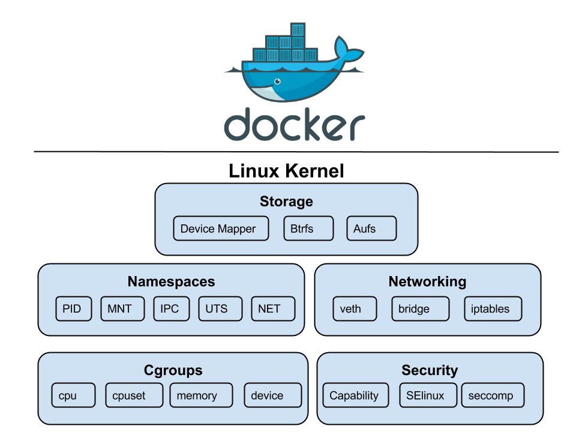
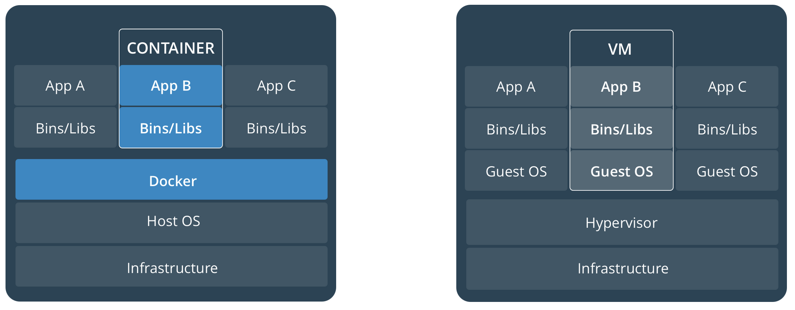
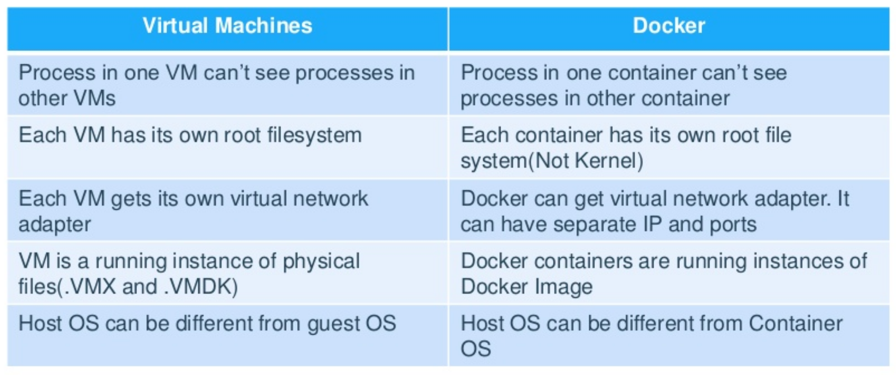
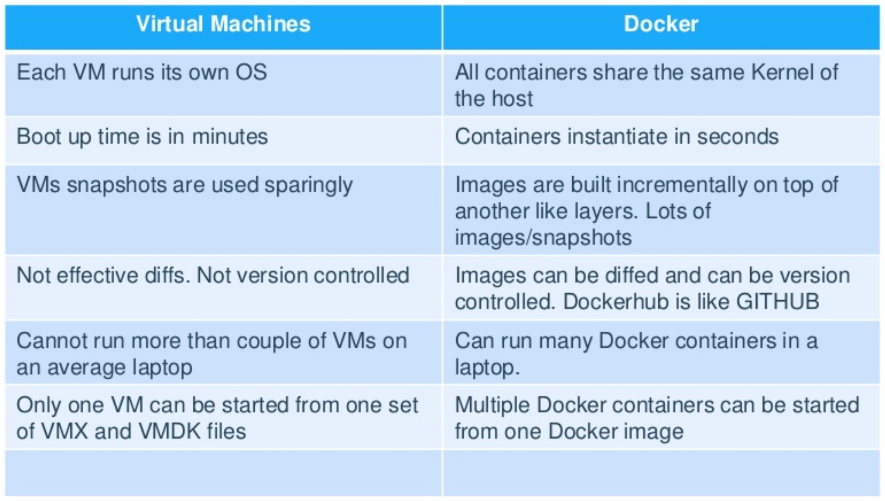
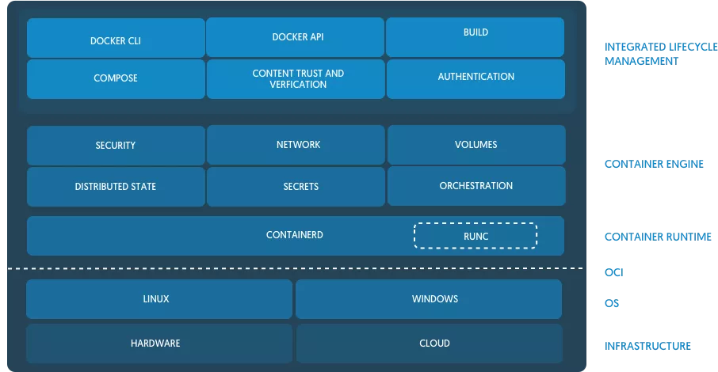
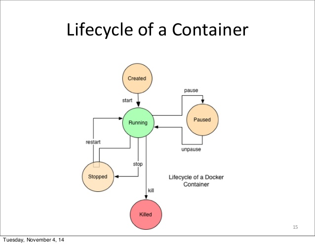
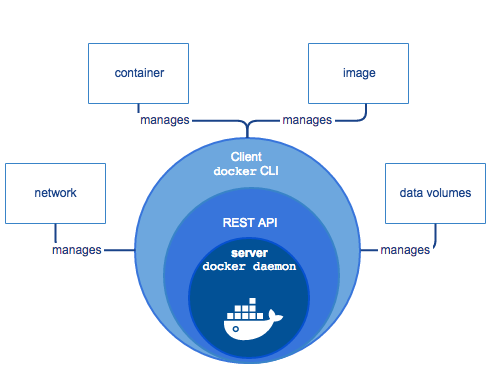

Docker Overview
around technology and how it shapes your teams
Giuseppe Virzì
Who am I?
Giuseppe Virzì
Release/Reliability Engineer
What will we talk about?
- virtualization and containers
- the Docker approach
- containers4devs
- Docker containers and images management
- a quick look at how to containerize an application
- Docker Volumes, Networking Basics
- containers4sysadmins
- Docker Compose
- Docker Swarm
- containers and the DevOps
What do we mean by Virtualization?
“The act of creating a virtual (rather than actual) version of something, including virtual computer hardware platforms, storage devices, and computer network resources.”
Virtualization examples
- JVM - virtualize running environment for a single program
- Hypervisors - virtualize a running environment for the whole OS
- Containers - virtualize a running enviroment for a single process, sharing OS
Are containers really about virtualization?
- LESS virtualization
- MORE isolation
- MORE distribution
How do linux containers work?
They use some features of the linux kernel (>=3.8):
- Namespaces
- mnt (mount points, filesystems)
- pid (processes)
- net (network stack)
- ipc (System V IPC)
- uts (hostname)
- user (UIDs)
- CGroups
- UnionFS

Ok, now tell me about Docker
- A Company as well as Product
- Developed by DotCloud Inc. ( Currently Docker Inc.)
- A Framework they built their PaaS upon.
- Released it as open source 6+ years back
- Cross-platform nature and friendliness towards System Admin and Developers
- Developers - concentrate on building applications and getting them running inside the containers
- System Admins - work on running the containers in deployment.
- Possible to set up in any OS, be it Windows, OSX, Linux - It works the same way
- Docker uses host OS kernel, there is no custom or additional kernel inside container. All containers runs on machine are sharing this "host" kernel.
Paradigm shift
- From: It works on my computer
- To: It works on my container
Real Paradigm shift
- applications can be packaged with their dependencies in a virtual container.
- applications can be distributed in images runnable on every supported platform
- guaranteed to run the same way (Your development desktop, a bare-metal server, virtual machine, data center, or cloud)
- less overhead compared to starting virtual machines is the promise
Kernel Features Docker uses

Docker vs VMs

Docker vs VMs: Similarities

Docker vs VMs: Differences

Docker is not a VM!
So please do not try to install sshd in your containers.
Confusion around the possibility to install a distribution.What problems Docker solves?
Back in the days:
- software used to be monolithic
- deployed on a single server
- developed on a single software stack
- Vertical scaling
What problems Docker solves?
Nowadays:
- software are continuously developed and deployed
- deployed on a high number of servers
- highly distributed, higly decoupled
- developed using heterogeneus techologies
- Horizontal scaling
What problems Docker solves?
Modern apps are hard to ship and deploy because:
- servers may not be perfectly identical
- Dev and Prod envs are different
- as hard as trying to ship goods to customers.
What problems Docker solves?
No surprise if we discover that
“docker definition: 1. a person who works at a port, putting goods onto and taking them off ships.”
What problems Docker solves?
Why Docker does it better?
- Native applications
- less overhead
- less portable
- Virtual machines
- more overhead
- more portable
- Docker
- Somewhere in the middle
Docker Block: components

Docker Architecture

Docker Container Lifecycle

Docker Block: CLI
docker build [options] . -t "app/container_name" # name
docker run hello-world
docker create --name app_redis_1 --expose 6379 redis:3.0.2
docker exec app_web_1 tail logs/development.log
docker exec -t -i app_web_1 rails c
Docker Block: CLI
docker ps
docker ps -a
docker images
docker rm
docker rmi
Docker Block: Daemon
- dockerd is the persistent process that manages containers
- It listens on a unix socket /var/run/docker.sock
- or on the tcp port tcp://127.0.0.1:2375 (or 2376 if SSL)
Docker Block: Daemon

Docker Block: Containerd
“It provides a client layer of types that platforms can build on top of without ever having to drop down to the kernel level.”
Docker Block: DockerHub
http://hub.docker.com/
Docker Hub is a service provided by Docker for finding and sharing container images with your team. It provides the following major features:
Docker Block: DockerHub
- Repositories: Push and pull container images.
- Teams & Organizations: Manage access to private repositories of container images.
- Official Images: Pull and use high-quality container images provided by Docker.
- Publisher Images: Pull and use high-quality container images provided by external vendors. Certified images also include support and guarantee compatibility with Docker Enterprise.
- Builds: Automatically build container images from GitHub and Bitbucket and push them to Docker Hub
- Webhooks: Trigger actions after a successful push to a repository to integrate Docker Hub with other services.
Docker Block: Image Storage
FROM ubuntu:15.04
COPY . /app
RUN make /app
CMD python /app/app.py
Docker Block: Image Storage

Docker Block: Container Storage

Docker Block: Volumes

Docker Block: Volumes
- The copy-on-write (CoW) strategy
- Layers sharing
- Better push/pull performances
Docker Components: Network
- User-defined bridge networks are best when you need multiple containers to communicate on the same Docker host.
- Host networks are best when the network stack should not be isolated from the Docker host, but you want other aspects of the container to be isolated.
- Overlay networks are best when you need containers running on different Docker hosts to communicate, or when multiple applications work together using swarm services.
- Macvlan networks are best when you are migrating from a VM setup or need your containers to look like physical hosts on your network, each with a unique MAC address.
DEMO I
docker --version
docker system info
docker run hello-world
docker images
docker ps [-a]
docker run -d -p 9999:80 -v $(pwd):/var/www/html nginx
docker inspect xxxx
docker top xxxx
docker logs -f xxxx
docker kill
Building Images
gothinkster/hapijs-realworld-example-appBuilding Images: Dockerfile
FROM node:6-alpine
RUN mkdir -p /usr/src/app
WORKDIR /usr/src/app
COPY package.json /usr/src/app/
RUN npm install && npm cache clean
COPY . /usr/src/app
EXPOSE 8080
CMD [ "npm", "start" ]
Building Images: Compose
version: '3.2'
services:
conduit_api:
build: .
image: conduit_api:1.0.0
depends_on:
- mongo
environment:
PORT: '8080'
NODE_ENV: 'production'
MONGO_DB_URI: 'mongodb://mongo:27017/conduit'
healthcheck:
test: ["CMD", "curl", "-f", "http://localhost:8080/api/status"]
interval: 10m
timeout: 10s
retries: 3
ports:
- 8080:8080
restart: on-failure
mongo:
image: mongo:latest
expose:
- 27017
restart: on-failure
volumes:
- data:/data/db
volumes:
data:
Docker Swarm
- Cluster management integrated with Docker Engine
- Decentralized design
- Declarative service model
- Scaling
- Self Healing
- Overlay networks
- Service discovery (embedded DNS)
- Load balancing
- SSL certs used for inter-node communication
- Rolling updates
DEMO II
docker build
docker-compose build
docker-compose up
docker service
docker stack deploy -c docker-compose.yml demostack
docker service logs demostack_... 2>&1